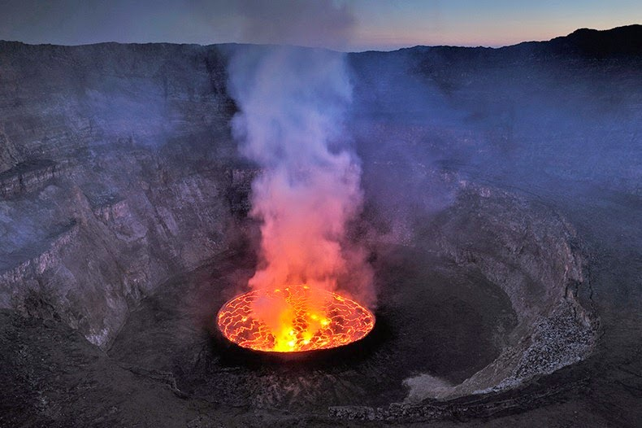

Lava Lakes of the World

While many volcanoes are scattered throughout the globe, there are far fewer permanent lava lakes. This site will help you navigate the seven lava lakes that are agreed upon within the scientific community, although one more is thought to have been discovered on a remote antarctic island via satellite images.